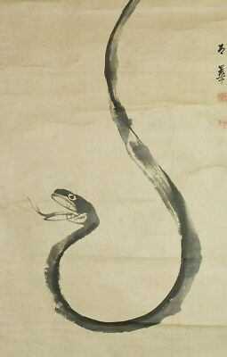

The Amazing AESOP's Fables
The Cock and the Jewel Fable
A Cock, scratching for food for himself and his hens, found a precious stone; on which he said:
"If thy owner had found thee, and not I, he would have taken thee up, and have set thee in thy first estate; but I have found thee for no purpose.
I would rather have one barleycorn than all the jewels in the world."
The Swallow and
the Other Birds Fable
It happened that a Countryman was sowing some hemp seeds in a field where a Swallow and some other birds were hopping about picking up their food.
"Beware of that man," quoth the Swallow.
"Why, what is he doing?" said the others.
"That is hemp seed he is sowing; be careful to pick up every one of the seeds, or else you will repent it."
The birds paid no heed to the Swallow's words, and by and by the hemp grew up and was made into cord, and of the cords nets were made, and many a bird that had despised the Swallow's advice was caught in nets made out of that very hemp.
"What did I tell you?" said the Swallow.
The Woodman and the Serpent Fable

One wintry day a Woodman was tramping home from his work when he saw something black lying on the snow.
When he came closer he saw it was a Serpent to all appearance dead.
But he took it up and put it in his bosom to warm while he hurried home.
As soon as he got indoors he put the Serpent down on the hearth before the fire.
The children watched it and saw it slowly come to life again.
Then one of them stooped down to stroke it, but the Serpent raised its head and put out its fangs and was about to sting the child to death.
So the Woodman seized his axe, and with one stroke cut the Serpent in two.
"Ah," said he, "No gratitude from the wicked."